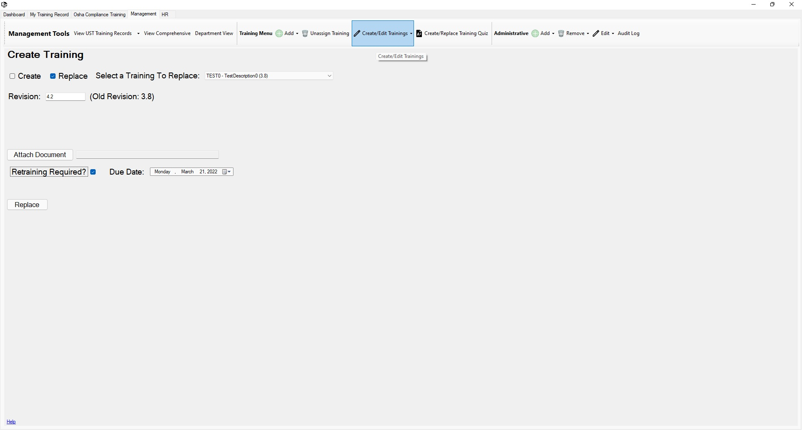

Return to Main Menu
Replace a Training
The Create Training page can be accessed by pressing the "Create/Edit Trainings" button in the toolbar of the management tab.
On this page, you can create a training or replace a current training.
Replacing a training will save the previous revision's training file in the archived trainings folder in the ULearn LMS cabinet in EFile.

Instructions:
-
Navigate to the Create Training page.
-
Check the box next to "Replace".
-
Select a training to replace.
-
Enter the new revision in the "Revision" field.
Note: The revision is stored as a number. This means that the revision "20.1" will be the same as "20.10".
Be careful while deciding how to format revisions.
-
Attach a document or video (any filetype that can be stored in EFile Cabinet can be used).
Verify that your filetype can be stored in and opened from EFile before using it. (Most filetypes are okay)
It is a good practice to only use filetypes that most people can open on their computers. If it will require an obscure application
to view the filetype, reconsider how you choose to store the training.
-
If the changes to the training necessitate retraining of employees for which the training is assigned, check the "Retraining Required?"
box and select a due date for the retraining.
-
Press the "Create" button.